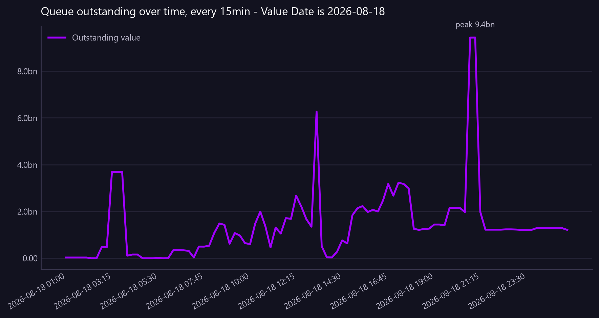

Queue outstanding over time, every 15min - Value Date is 2026-08-18
How the queue built and drained, every 15 minutes: arrivals, clearances and what was still outstanding. The ageing view says how bad it is; this says how it got that way.
Asked as Show how the approval queue evolved through 18 August in 15 minute intervals - what arrived, what cleared and what was still outstanding.

99 time points are plotted. The shape is readable, but a coarser interval would make individual points easier to pick out. Arrived peaks at 9, Cleared peaks at 9, Outstanding peaks at 27, against 9.4bn for the largest series, so plotting it would be a flat line on the axis. It is in the table.
Commentary
The report provides a detailed view of the approval queue's evolution on 18 August, showing the number of items that arrived, cleared, and remained outstanding at 15-minute intervals. Notably, there was a significant increase in the outstanding value at 03:15, reaching 3,687,545,845.16, which persisted until 04:30. The highest number of outstanding items was recorded at 09:00 with 26 items, although the outstanding value was lower at 616,592,174.23 compared to earlier peaks. Operations should closely examine the period between 08:15 and 09:45, where both the number of outstanding items and their values fluctuated significantly, indicating potential bottlenecks or processing delays.
| Created Time (15min) | Arrived | Cleared | Outstanding | Outstanding value |
|---|---|---|---|---|
| 2026-08-18 01:00 | 0.00 | 0.00 | 1.00 | 30,167,009.77 |
| 2026-08-18 01:15 | 0.00 | 0.00 | 1.00 | 30,167,009.77 |
| 2026-08-18 01:30 | 0.00 | 0.00 | 1.00 | 30,167,009.77 |
| 2026-08-18 01:45 | 0.00 | 0.00 | 1.00 | 30,167,009.77 |
| 2026-08-18 02:00 | 0.00 | 1.00 | 1.00 | 30,167,009.77 |
| 2026-08-18 02:15 | 0.00 | 0.00 | 0.00 | 0.00 |
| 2026-08-18 02:30 | 1.00 | 0.00 | 0.00 | 0.00 |
| 2026-08-18 02:45 | 0.00 | 0.00 | 1.00 | 472,877,589.83 |
| 2026-08-18 03:00 | 2.00 | 1.00 | 1.00 | 472,877,589.83 |
| 2026-08-18 03:15 | 0.00 | 0.00 | 2.00 | 3,687,545,845.16 |
| 2026-08-18 03:30 | 0.00 | 0.00 | 2.00 | 3,687,545,845.16 |
| 2026-08-18 03:45 | 0.00 | 1.00 | 2.00 | 3,687,545,845.16 |
| 2026-08-18 04:00 | 1.00 | 0.00 | 1.00 | 110,043,921.77 |
| 2026-08-18 04:15 | 0.00 | 0.00 | 2.00 | 158,097,251.52 |
| 2026-08-18 04:30 | 0.00 | 2.00 | 2.00 | 158,097,251.52 |
| 2026-08-18 04:45 | 0.00 | 0.00 | 0.00 | 0.00 |
| 2026-08-18 05:00 | 0.00 | 0.00 | 0.00 | 0.00 |
| 2026-08-18 05:15 | 1.00 | 0.00 | 0.00 | 0.00 |
| 2026-08-18 05:30 | 0.00 | 1.00 | 1.00 | 13,799,417.70 |
| 2026-08-18 05:45 | 2.00 | 0.00 | 0.00 | 0.00 |
| 2026-08-18 06:00 | 3.00 | 0.00 | 2.00 | 4,991,898.31 |
| 2026-08-18 06:15 | 0.00 | 1.00 | 5.00 | 346,771,620.52 |
| 2026-08-18 06:30 | 1.00 | 1.00 | 4.00 | 341,767,801.83 |
| 2026-08-18 06:45 | 1.00 | 1.00 | 4.00 | 339,378,872.22 |
| 2026-08-18 07:00 | 3.00 | 1.00 | 4.00 | 316,492,780.80 |
| 2026-08-18 07:15 | 6.00 | 2.00 | 6.00 | 35,551,796.51 |
| 2026-08-18 07:30 | 1.00 | 1.00 | 10.00 | 499,065,211.90 |
| 2026-08-18 07:45 | 2.00 | 3.00 | 10.00 | 496,429,017.48 |
| 2026-08-18 08:00 | 6.00 | 3.00 | 9.00 | 533,104,757.62 |
| 2026-08-18 08:15 | 6.00 | 1.00 | 12.00 | 1,080,527,854.95 |
| 2026-08-18 08:30 | 8.00 | 3.00 | 17.00 | 1,486,056,898.09 |
| 2026-08-18 08:45 | 8.00 | 4.00 | 22.00 | 1,426,218,731.55 |
| 2026-08-18 09:00 | 6.00 | 7.00 | 26.00 | 616,592,174.23 |
| 2026-08-18 09:15 | 6.00 | 6.00 | 25.00 | 1,073,503,149.94 |
| 2026-08-18 09:30 | 4.00 | 7.00 | 25.00 | 974,737,933.33 |
| 2026-08-18 09:45 | 6.00 | 9.00 | 22.00 | 648,722,993.18 |
| 2026-08-18 10:00 | 5.00 | 6.00 | 19.00 | 601,549,481.25 |
| 2026-08-18 10:15 | 3.00 | 5.00 | 18.00 | 1,480,370,518.75 |
| 2026-08-18 10:30 | 6.00 | 8.00 | 16.00 | 1,993,059,385.72 |
| 2026-08-18 10:45 | 3.00 | 6.00 | 14.00 | 1,360,642,114.74 |
| 2026-08-18 11:00 | 7.00 | 4.00 | 11.00 | 462,935,611.25 |
| 2026-08-18 11:15 | 2.00 | 1.00 | 14.00 | 1,311,849,374.92 |
| 2026-08-18 11:30 | 5.00 | 5.00 | 15.00 | 1,054,365,937.66 |
| 2026-08-18 11:45 | 4.00 | 3.00 | 15.00 | 1,714,301,367.30 |
| 2026-08-18 12:00 | 5.00 | 3.00 | 16.00 | 1,684,058,843.67 |
| 2026-08-18 12:15 | 4.00 | 2.00 | 18.00 | 2,675,648,384.14 |
| 2026-08-18 12:30 | 5.00 | 6.00 | 21.00 | 2,217,455,336.90 |
| 2026-08-18 12:45 | 4.00 | 4.00 | 19.00 | 1,671,217,219.44 |
| 2026-08-18 13:00 | 4.00 | 5.00 | 19.00 | 1,349,077,181.41 |
| 2026-08-18 13:15 | 2.00 | 5.00 | 18.00 | 6,267,049,275.04 |
| 2026-08-18 13:30 | 2.00 | 4.00 | 15.00 | 513,614,106.51 |
| 2026-08-18 13:45 | 2.00 | 4.00 | 13.00 | 40,766,997.40 |
| 2026-08-18 14:00 | 4.00 | 1.00 | 11.00 | 33,144,691.02 |
| 2026-08-18 14:15 | 4.00 | 5.00 | 14.00 | 280,272,025.39 |
| 2026-08-18 14:30 | 4.00 | 2.00 | 13.00 | 760,808,597.13 |
| 2026-08-18 14:45 | 6.00 | 2.00 | 15.00 | 634,534,038.83 |
| 2026-08-18 15:00 | 2.00 | 3.00 | 19.00 | 1,838,706,874.73 |
| 2026-08-18 15:15 | 6.00 | 4.00 | 18.00 | 2,141,567,088.29 |
| 2026-08-18 15:30 | 4.00 | 1.00 | 20.00 | 2,228,183,222.27 |
| 2026-08-18 15:45 | 3.00 | 5.00 | 22.00 | 1,976,780,281.06 |
Showing 60 of 99 rows, as the tool does. The Excel download carries the rest.
Limitations of this view
- The view is scoped to the value date range from 2026-07-20 to 2026-08-18.
- The data is synthetic and non-production, with all identifiers and amounts fabricated.
- The display currency is GBP, using static synthetic FX rates.
Downloads
{kind=link}
The Markdown documents everything considered, so a reader can hand it to an AI and ask follow-up questions about this view.
How this was produced
{
"view": "nostro_transfer",
"sheet": "Nostro Transfer View",
"source_file": "synthetic_liquidity_month.xlsx",
"mode": "backlog",
"filters": [
{
"column": "Value Date",
"operator": "eq",
"value": "2026-08-18"
}
],
"group_by": [],
"time_bucket": null,
"measures": [],
"columns": [],
"sort_by": null,
"limit": null,
"join": null,
"derived": [],
"currency_corrections": [],
"data_as_of": "2026-08-19T01:21:56",
"measure": null,
"aggregation": null,
"rows_in_view": 4781,
"rows_after_filters": 217,
"rows_returned": 99,
"executed_at": "2026-08-20T11:30:01"
}